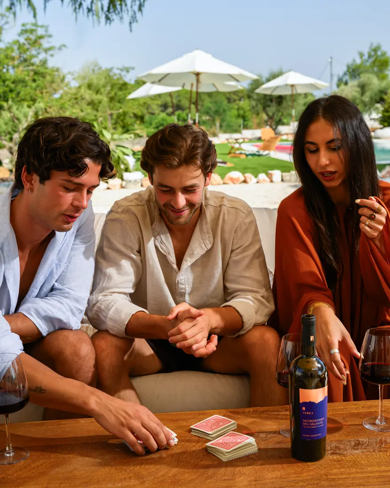
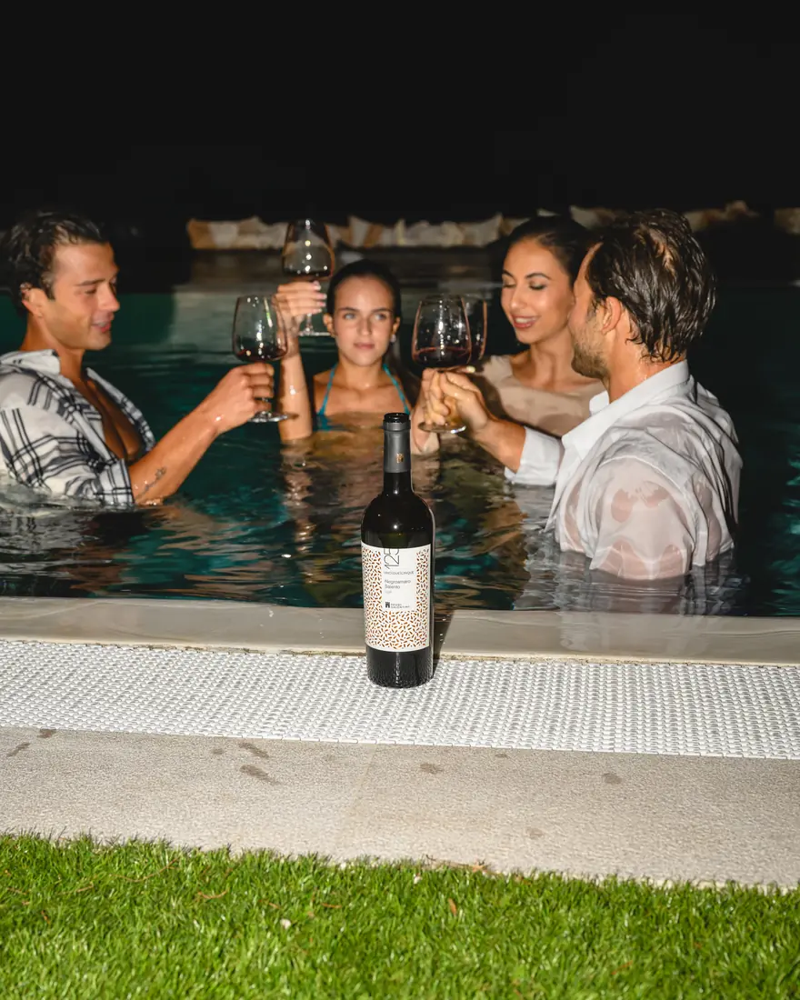
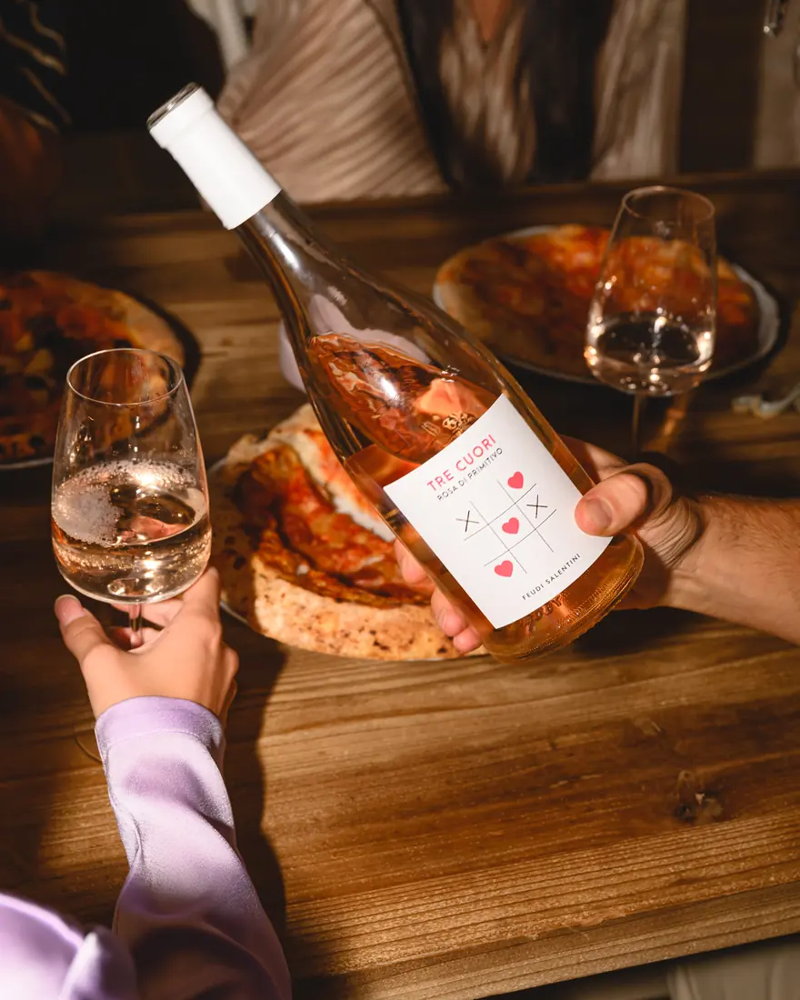
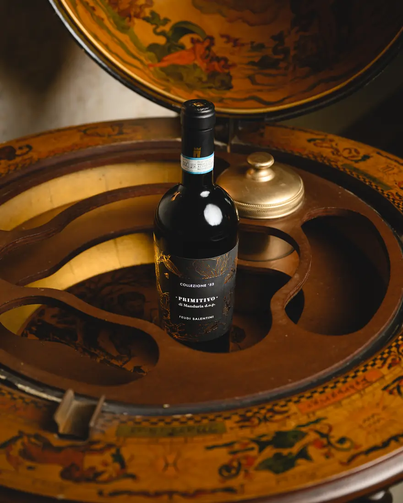
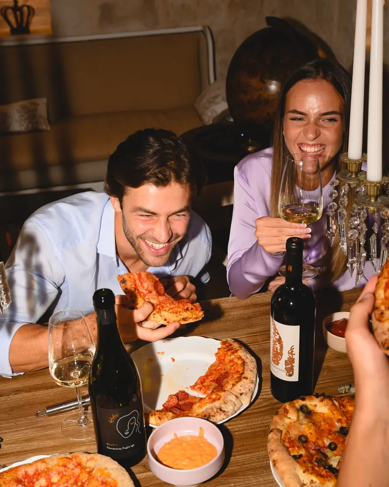
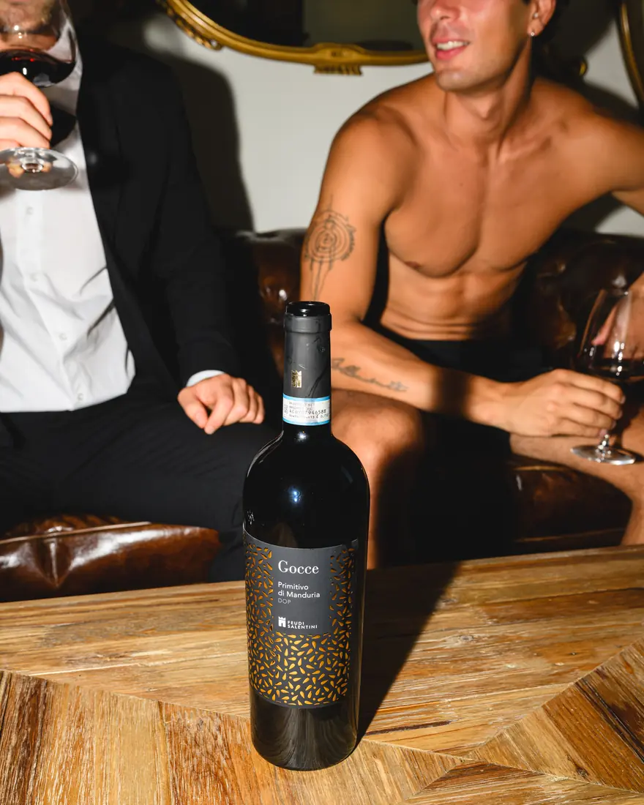

Wines that set the mood.
Leporano, sul mar Ionio, a sud di Taranto
Vai alle collezioniLe collezioni
Born in Salento, experienced worldwide.




Born in Salento, experienced worldwide.




Born in Salento, experienced worldwide.
Born in Salento, experienced worldwide.
Born in Salento, experienced worldwide.
 PhiliaPrimitivo di Manduria Dolce Naturale DOCG
PhiliaPrimitivo di Manduria Dolce Naturale DOCG MarpiccoloFiano Salento IGP
MarpiccoloFiano Salento IGP
AppassimentoRosso Puglia IGP 125 Bianco OrganicBianco Puglia IGP biologico
125 Bianco OrganicBianco Puglia IGP biologico
GoccePrimitivo di Manduria DOPBorn in Salento, experienced worldwide.
PhiliaMarpiccolo125 Bianco OrganicCollezione 53 PrimitivoPrimitivo di Manduria DOP
La cantina della famiglia Varvaglione.

Feudi Salentini è a Leporano, in provincia di Taranto, sul mar Ionio.
-
01Quarta generazione
La famiglia Varvaglione.
Cosimo, Maria Teresa, Marzia, Angelo e Francesca Varvaglione portano avanti l'azienda, giunta alla quarta generazione.

la vendemmia, a mano -
02Vitigni autoctoni
La nostra filosofia.
Feudi Salentini produce vini dai vitigni autoctoni pugliesi per eccellenza: Primitivo, Negroamaro, Verdeca e Malvasia Bianca, usando tecniche di vinificazione moderne, con un occhio all'ambiente per salvaguardare la terra.

Primitivo ad alberello -
03Il territorio
Il Salento, una terra divina.
Il Salento è ricco di castelli, di storia e di tradizioni. Feudi Salentini nasce qui, in una terra rinomata per il Primitivo di Manduria. I muretti a secco, gli uliveti secolari e il mare turchese fanno parte di uno scenario che dà vita a vino e olio.

il mar Ionio, a due passi -
04Equalitas dal 2022
Sostenibilità.
Dal 2022 Feudi Salentini è certificata Equalitas, lo standard che valuta la sostenibilità ambientale, sociale ed economica delle aziende del vino.
Il bilancio 2025 (PDF)
i filari della vigna
65 riconoscimenti.
Premiati dai concorsi internazionali del vino. Ogni scheda del vino mostra i suoi.